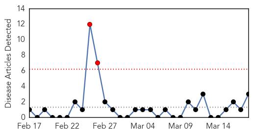

Hepatitis
30-Day Web Trend
4 alerts, 1 warnings
30-Day Twitter Trend
0 alerts, 0 warnings

Article Locations

Article Confidences

Top Articles:
-
No articles found for Mar 18, 2014
Top Tweets:
-
No tweets found for Mar 18, 2014
MERS
30-Day Web Trend
2 alerts, 0 warnings

30-Day Twitter Trend
6 alerts, 0 warnings

Article Locations

Article Confidences

Top Articles:
Top Tweets:
- 0.684
- “@MEGlobalHealth: CDC releases podcast on Middle East respiratory syndrome coronavirus MERS. http://t.co/IITaKUj55h”